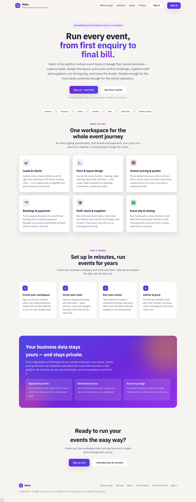
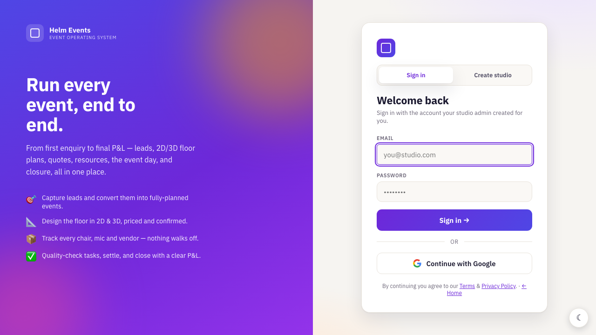
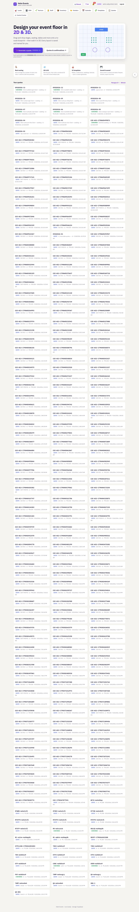

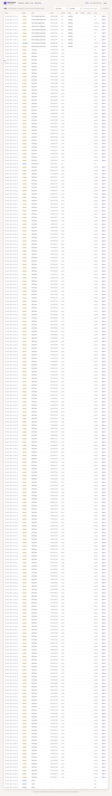
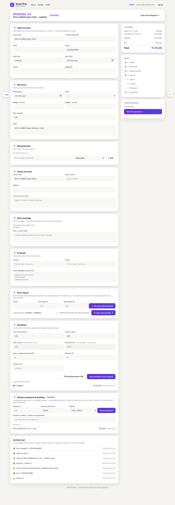
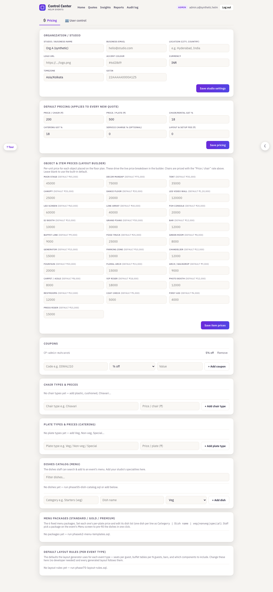

This guide walks a tester through the whole Helm Events app, screen by screen, from the public landing page all the way to closing an event. Each section explains what the screen is for, every important button/field, and what to check. Screens shown are the staging environment (safe synthetic data).
Before you begin
What Helm is
Helm is an event-management app for an events studio. The core object is a quote — a single quote row is the event: everything (discovery notes, pricing versions, the floor plan, payments, tasks, closure) attaches to it. Work flows left-to-right through a lifecycle: Lead → Discovery → Pricing/Quote → Proposal → Client approval → Payment → Planning → Event day → Settlement → Closure.
Signing in (staging test accounts)
Open the app, click Sign in, and use a role account. All staging users share the password helm0909.
Roles matter. What you can see and do changes by role. Admin sees everything. Sales owns the pipeline (leads). Planner/Operations/Manager run pricing, planning, settlement and closure. A client only ever sees their own approval page.
Every number field is validated. Try to break them: negatives, letters, symbols, huge values, decimals where only whole numbers make sense. The app should reject with a clear message — that's expected behaviour, not a bug.
STEP 1 · Landing page

Purpose: the public marketing page. This is what a visitor sees before signing in.
What to check
Page loads with no broken images or console errors.
The primary call-to-action / sign-in link works and takes you to the sign-in page.
Layout looks correct on desktop and on a phone-width window.
STEP 2 · Sign in / Sign up & onboarding

Purpose: authenticate an existing user or create a new studio account. New sign-ups are taken through onboarding (create the studio, land on the dashboard).
Key controls
Email / Password — sign in with a test account above.
Sign up — creates a new account; a brand-new account with no studio is routed to finish onboarding.
Google sign-in (if shown) — is built but may be disabled on staging.
What to check
Wrong password shows a clear error and does not sign you in.
A malformed email is rejected.
After a correct sign-in you land on the Dashboard; after sign-out the session is cleared (you can't reach protected pages by pasting the URL).
STEP 3 · Dashboard

Purpose: home base after sign-in. Shows your events/quotes and the modules you have access to. The tiles/nav visible here depend on your role.
Key controls
Generate a quote / + New — starts a brand-new quote (event). Only roles allowed to create (Admin, Planner, Sales, Manager) see this; other roles won't see a button that would error.
Module navigation (Leads, Quotes, Staff, Inventory, Vendors, Control Center, …) — jumps to each area. What appears is driven by your role's access matrix.
Your quotes list — click a quote to open its event flow.
What to check
The correct modules show for the role (e.g. an Event Manager should see Leads immediately — not only after clicking another tab).
"Generate a quote" creates a new quote and opens it.
Tabs load promptly without a long blank flash.
STEP 4 · Leads (pipeline)

Purpose: the sales pipeline. Leads move across stages (New → Qualified → Discovery → Quoted → Won / Lost) by drag-and-drop. This is where an event begins.
Key controls
+ New lead — opens the lead form (contact name required; phone/email validated; guest count & budget must be valid numbers).
Search box — filters the board by name/phone/type. (It should not auto-fill your email.)
Drag a card between columns — changes the lead's stage.
Convert → on a card — turns the lead into a quote/event and moves you into the flow.
Undo / Redo — reverses the last board change.
What to check
Creating a lead with an empty name is rejected; a bad phone/email is rejected with a clear message.
Scrolling the board does not make cards disappear.
Convert produces a new quote you can open.
STEP 5 · CRM archive

Purpose: the history of every lead (including converted/lost), for reference and follow-up.
Key controls
Search and filters (source, stage) narrow the list.
Full history toggle — show every record vs the latest per lead.
What to check
Filters and the toggle actually change what's listed.
STEP 6 · Event flow (the quote)

Purpose: the heart of the app — one screen with the full lifecycle for a single event as numbered steps (1 Client, 2 Discovery, 3 Requirements, 4 Venue, 5 Menu, 6 Layout, 7 Proposal, 8 Quotation) plus Advance payment and Client approval on the right.
Key controls
Client details — name, company, email, phone, guests, budget, event date. Email/phone are validated; if two people edit the same event, a stale save is blocked with a "changed by someone else — reload" message.
Quotation — chairs, guests, rates, décor, discount, coupon → a live total. The server recomputes the total; a tampered client total is ignored.
Save quotation (new version) — saves a Q-version. An empty (₹0) quote is refused with a message.
Download quote PDF — produces the quotation PDF (blocked if the quote is empty).
Advance % / Advance amount — 0–100% / money ≥ 0; used to record the booking advance.
Send for approval — mints a scoped client-approval link.
What to check
Saving with nothing filled is refused (no ₹0 quote).
Advance % rejects negatives and values over 100.
The PDF opens with the right client, lines and total.
Purpose: external vendors/freelancers/rentals/suppliers, with contact details and history.
Key controls
+ Add partner — name required; phone/email validated.
Show inactive toggle; Deactivate/Reactivate; category filters.
What to check
Phone/email validation as with staff.
Filters and "Show inactive" change the list.
STEP 17 · Control Center (admin)

Purpose: studio settings — pricing defaults (chair/plate rates, GST %, service %), coupons, chair/plate types, package templates, users, and the role access matrix (who can view/edit each area).
Key controls
Pricing — rates are money ≥ 0; GST/service are percentages 0–100.
Access matrix — toggle View/Edit per role per area.
What to check
Percentages over 100 or negative prices are refused.
Changing a role's access changes what that role sees after they reload.
Reporting a bug
For each issue note: the screen, the role you were signed in as, the exact steps, what you expected, what happened, and a screenshot. Include anything in the browser console (right-click → Inspect → Console) if you can.
Remember: rejected invalid input (negatives, bad phone/email, empty required fields, overpayment) is correct behaviour. A bug is a button that does nothing, data that disappears, a crash, or wrong numbers.